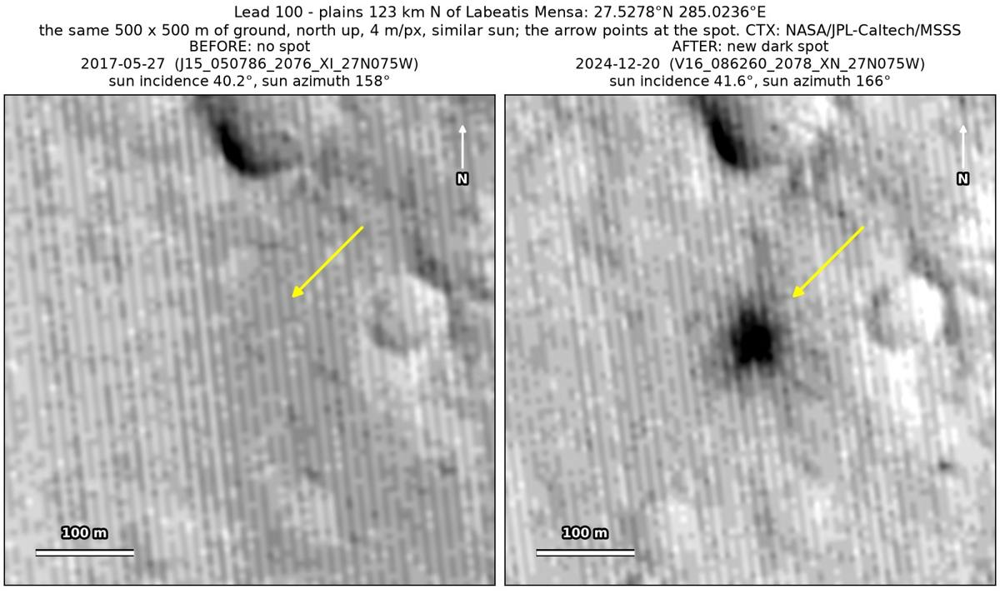
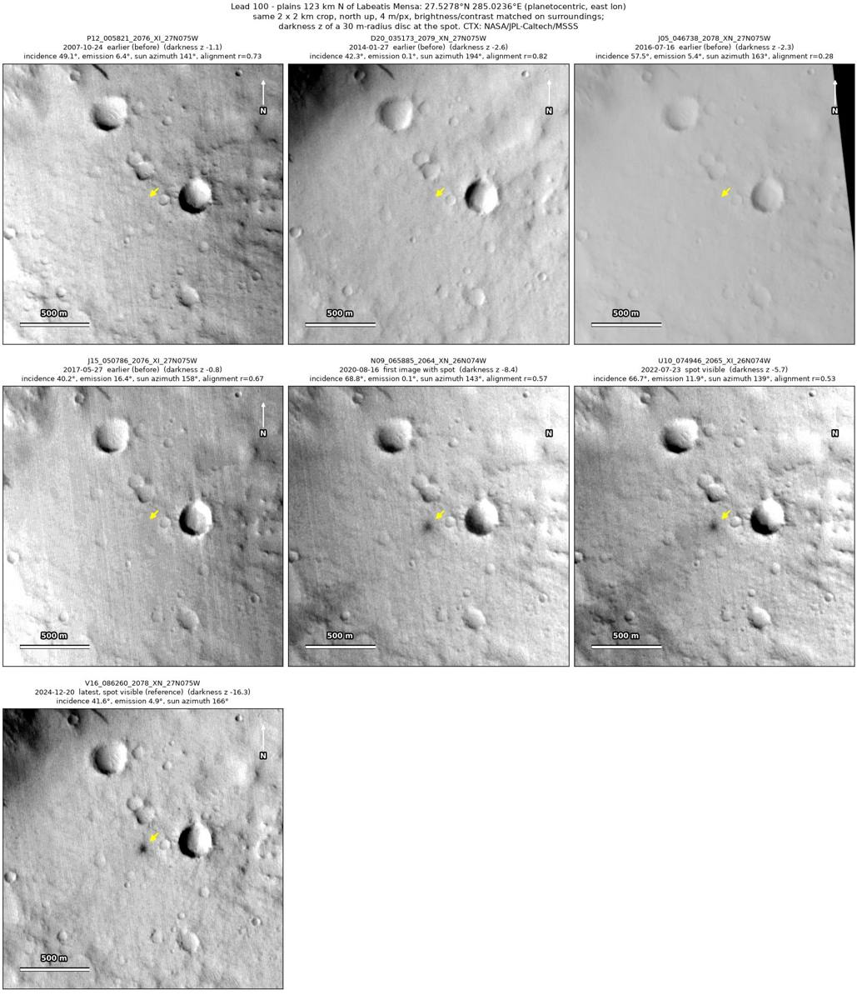
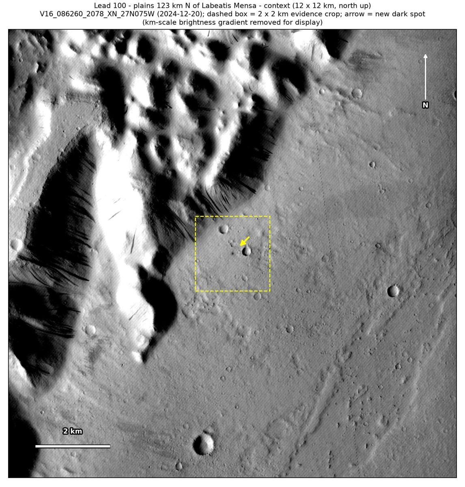

Professor of Mathematics
Paata Ivanisvili
Department of Mathematics, University of California, Irvine

← Possible new impact sites on Mars
Candidate 100: Plains 123 km north of Labeatis Mensa
Strong · roughly 85%

What changed. A compact dark spot about 55 m across, with fainter darkening around it, appeared on cratered plains 123 km north of Labeatis Mensa between May 2017 and August 2020. Three CTX images from three orbits show it, the last in December 2024.
Why it may be a new impact. Four earlier images, from 2007 to 2017, show plain ground at the spot, while a small crater about 150 m to the east and a dark mark 300 m away show in every image. The last of the four, from May 2017, was taken under nearly the same sun as the December 2024 image. A compact spot with a dark core and fainter darkening around it, lasting more than four years, is how the blast zone of a small new crater looks.
- Location
- 27.528° N, 285.024° E (74.976° W)
- Absent
- 24 October 2007, 27 January 2014, 16 July 2016 and 27 May 2017
- Present
- 16 August 2020, 23 July 2022 and 20 December 2024
- Size
- Compact dark spot about 55 m across (50 × 64 m in the December 2024 image), a dark core with fainter darkening out to about 150 m
- Confidence
- Strong candidate: roughly 85% likely to be a new impact.
- Caveat
- An image from NASA’s high-resolution HiRISE camera covers the site, but it was taken on 26 February 2012, before the spot formed. The first two images with the spot, from August 2020 and July 2022, were taken under a low sun, though the December 2024 image, under the May 2017 sun, shows it clearly. When an earlier image is subtracted from a later image, a change at the edge of the surrounding 2 × 2 km is about as strong as the spot. Like every candidate here, it is unconfirmed: see the caveat.

